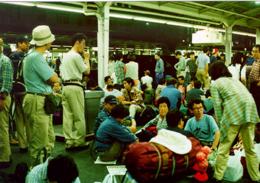
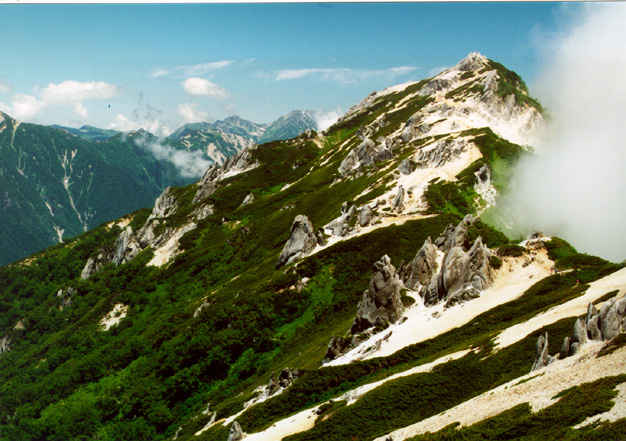
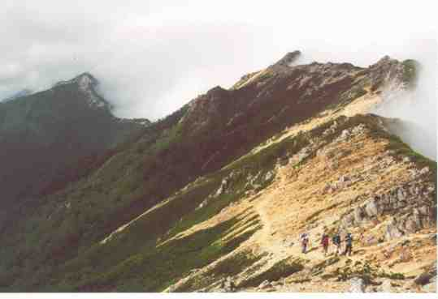
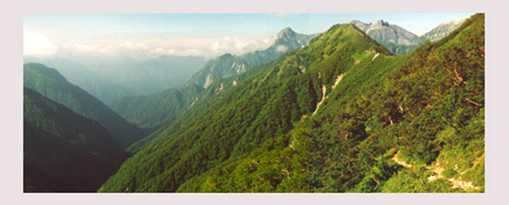
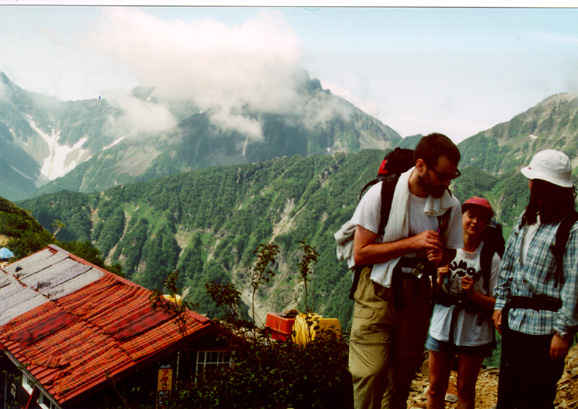
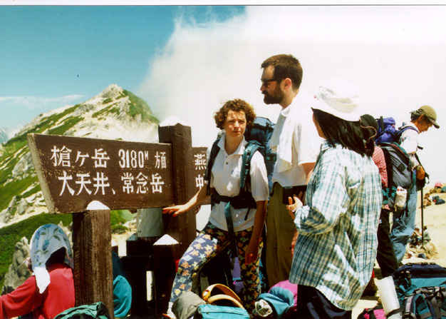
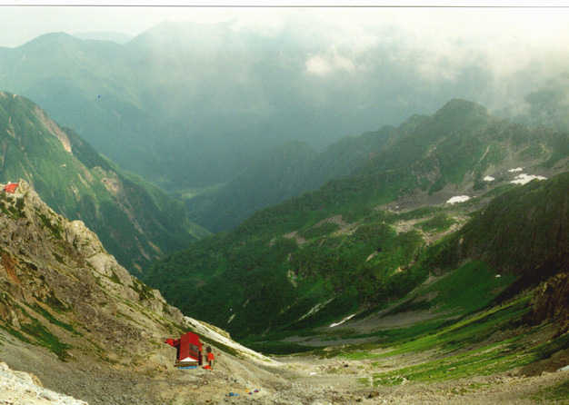
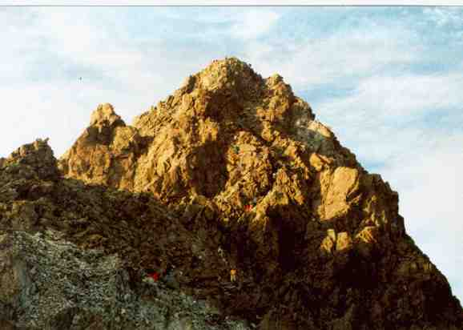

July 18th - 19th - 20th, 1998. North Alps (Yarigatake)
(organised by Paul Reay)
This page may take some time to load, as there are a number of images. However, please wait and view - the images are excellent! Why not read the description of the walk and the consequences which always seem to happen to Victor, then view the pictures!
Description
Nagano news flash !
By Victor Heese
July 21, TSUKUBA, JAPAN (Rooters) In a hastily called press conference, Tsukuba Walking and Mountaineering Club acting secretary John S. Payne announced today that their previous press release of Thursday, July 16 was not entirely accurate. In that press release, the TWMC announced that one of their members, Victor Heese, had died while hiking on a TWMC sponsored walk in the North Alps, Nagano prefecture, on the weekend of July 18-20. In this latest press release, the TWMC retracted their previous statement and said that Mr. Heese, much to their surprise, had not in fact died.
When asked why the TWMC had made such an outrageous and obviously premature statement, Payne replied that although Heese had gone on a few previous walks with the club, he was in no way prepared for such a strenuous trip. "In the minds of the TWMC executive, this time Victor had bitten off more than he could chew and we felt it was in everyone's interest to declare what we considered to be a foregone conclusion," said Payne. When asked how this could possibly be in everyone's interest Payne stated that "As Monday was a holiday and we didn't think that Victor would make it through the first 2 days of the trip, we could hold an early wake at Victor's favourite hangout, the Gold Rush, to commemorate his noble but disastrous effort. We figured, given Victor's love of a good party, that would be what he would have wanted. We never imagined that the old fart was going to make it." When asked if the TWMC was the kind of club that gave its members special nicknames and if "old fart" was Heese's, Payne responded "Not really. That's what we call him behind his back. But we mean it affectionately. No, really!"
Club treasurer, Paul Reay, added that given Heese's vices and that his emergency medical kit consisted of a half liter of 'medicinal' scotch and a pack of Marlboros, he could have gone at any time of heart failure, respiratory disease, liver dysfunction or terminal baldness, but that probability suggested that it would be this weekend. He continued, "Personally, I had the old fart down for syphilis on the 18th. I mean that affectionately. Really!" When asked to elaborate, Reay refused comment but it has been learned from anonymous sources that the TWMC had created a pool in which members guessed the date and means of Heese's death with the winner to receive Heese's new backpack and 2 free future walks. Sources also claim that life insurance had been taken out on Heese by the TWMC. When asked to confirm this, Reay refused comment but did admit that the TWMC had in fact been looking to purchase new medical supplies and a tent.
Further investigation has determined that the TWMC had planned a 'walk' in the mountains of Nagano and that 9 members had gone. Four members, 3 women and 1 man, took a North to South route from Nakabusa Spa rendezvousing with the second group at Yarigatake on the second night of the trip. The second group, consisting of 5 male members including Heese, took a more difficult route starting from Kamikochi that included climbing Okuhotaka-dake (Japan's 3rd highest mountain) and Yarigadake (Japan's 4th highest mountain) as well as 5 other peaks. Though inexperienced, Heese seems to have survived this difficult trek.
Although this second route was significantly more dangerous than the first, which was much more appropriate for an inexperienced hiker, sources say that Heese joined the more difficult hike and even began to gleefully sing the Village People song "Macho Man" as he signed his name and gave his blood type and dental records to organizers.
When reached for comment, members of the second group were unanimously surprised. Andreas said, "Although he was not as sure-footed as a mountain goat, the old fart made up for it by by being as grumpy as a billy goat. That is said affectionately. Really!" Negishi-san commented "He part Japanese must be. The old fart ga went to climbing with stubborn endurance and suffering. Affectionately that I mean. Honto ni!" David stated, "Tabernacle! Le viellieux fart did not seem to mind even when ze little old grannies passed him. I mean zat affectionnment. Vraiment!" The only apparent dissent came from Thomas who said, "I should have joined the women's group. It was no fun sleeping beside the old fart. But of course, I mean that affectionately. No. I'm serious."
Members of the other group were also contacted for their comments. Sylvie said, " Asti! I could not believe my eyes when I saw him walking to the lodge at Yarigadake! Zough I had only met him ze night before last, I was sure that I would not see ze old fart again. I must say zat affectionately because I do not really know him. Really!" Miho-san, out of politeness refused all comment, although she did admit to thinking that she was seeing a ghost as Heese approached the lodge. Franz also seemed surprised at Heese's appearance. "Gott im Himmel! I chose das easy route because I remember Oze and I did not vant to carry das alte fart's body down za mountain. But I mean dat with affection." Laure recounted how when Heese reached the summit of Yarigatake everyone broke into applause causing a rockslide that killed 3 Japanese and 1 American climber. "I'm sure the Japanese will be missed," she said.
Heese was unavailable for comment, however his doctor did say that had Heese been conscious, it might have been appropriate to use Mark Twain's famous quote upon hearing of the premature announcement of his own death. "But, he's probably not that clever, even when he is conscious," the doctor continued.
Also at the hospital was Heese's brother, Jon Heese. He commented that "My brother's breathing seems a little less desperate now that we have him on the ventilator. The scotch IV drip also seems to be making a difference."
Although family and friends were initially upset at the TWMC's premature death announcement, plans for a defamation of character lawsuit have been dropped as it was discovered, upon careful examination, that Heese doesn't actually have a character....
Assorted Pictures (many thanks to Laure Bourgeois!)
Shinkuku eki - Picnic in Shinjuku station, at about ten o'clock at night. Many of the people on the photo probably ended up sleeping in the train corridors.

Tsubakurodake - Tsubakurodake is about 3 and a half hours from Hodaka. It's where we rested our already weary bodies during lunch of the first day. It was so nice lying in the sun there that we slept for half an hour, waiting to get sun-burnt... From Tsubakurodake to the foreground of the image one can see the ridge where we spent a good part of the walk to Yarigatake.

Ridge to Otenjodake - The path we walked on during the second half of the first day. Note the clouds on the right-hand side (east) of the ridge. It felt like walking next to a boiling crater...

View from Otenjo hut - Looking south-east from Otenjo hut, which is on the southern slope of Otenjo-dake. The photo was taken on the morning of the second day.

Nishidake - Three of the four valiant hikers on the way to a much-needed coffee at Nishi-dake's hut. They're discussing the possibility to jump directly onto the roof of the hut, where the drying futons should make it a very comfortable place.

Yarigatake - View of Yarigatake from just before Nishi-dake. Yes, the white streaks are snow !

View down Yari - View down the main hut (village ?!) of Yarigatake. That's the way we came back to Kamikoochi, rolling down the hill (a very efficient hiking technique).

Golden yari - Sunset light over the summit of Yarigatake. Some of the coloured ants climbing the mountain are David, Sylvie, Franz, Victor (and his beer) and Thomas.

Final View of Yarigatake - breath-taking!